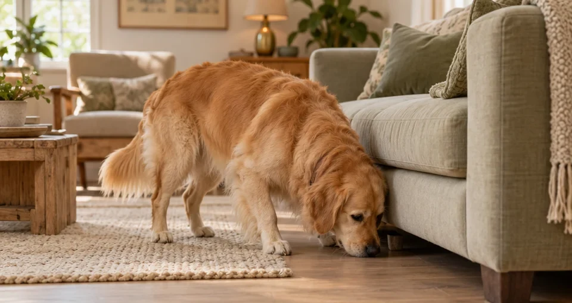

Acabou o «e agora?»
Abra o guia, escolha um exercício e saiba o que preparar, como começar e quando simplificar.
O TEMPO JUNTOS MERECE MAIS
50 exercícios para estimular o cérebro do seu cão — e transformar pequenos momentos do dia em novas descobertas.
Edição digital em PDF · Português de Portugal
50exercícios passo a passo
5áreas para explorar
68páginas de descobertas
30dias de desafio incluídos
MAIS DO QUE UMA BRINCADEIRA
O passeio faz parte da rotina. A curiosidade também pode fazer.
Farejar, escolher, resolver pequenos desafios e aprender consigo. O Mente Canina reúne ideias práticas para dar espaço a tudo isto, com instruções claras e sem a pressão de fazer tudo perfeito.
Abra o guia, escolha um exercício e saiba o que preparar, como começar e quando simplificar.
Cada exercício inclui versões mais fáceis e mais difíceis. A melhor progressão é aquela em que ele se sente confortável.
Há propostas de poucos minutos e materiais simples, como uma toalha, caixas ou o brinquedo favorito.
CINCO FORMAS DE DESCOBRIR
Do primeiro jogo de procura a pequenos desafios de memória. Dez exercícios em cada área, para variar sem complicar.

EXERCÍCIOS 01—10OLFATO E EXPLORAÇÃO
Transforme recompensas, brinquedos e pessoas familiares em pistas para procurar. Um ponto de partida simples para despertar a curiosidade.
3 exemplos dos 10 exercícios deste capítulo
ABRA ANTES DE DECIDIR
Veja o interior da edição. Fotografia demonstrativa, passos curtos, materiais e indicações de segurança: o essencial para passar da leitura à prática.
Páginas da edição de 68 páginas. Imagens demonstrativas geradas com IA.
A capa · 1 de 4
O percurso · 2 de 4
Um exercício · 3 de 4
O desafio · 4 de 4
SeguinteUMA ROTINA QUE SE CONSTRÓI
Não há uma meta para cumprir nem um cão «perfeito» para alcançar. Há pequenas experiências para repetir, ajustar e apreciar em conjunto.
Comece por uma proposta fácil. «Qual das mãos?» tem uma duração orientativa de 3 minutos.
Siga o passo a passo e dê-lhe espaço para explorar. Se estiver difícil, torne a tarefa mais simples.
Use o desafio de 30 dias e o diário para descobrir o que ele mais gosta. Repetir também conta.
O PRÓXIMO CAPÍTULO É VOSSO
Um guia para voltar a abrir sempre que apetecer experimentar algo novo.
EDIÇÃO DIGITAL · 68 PÁGINAS
MENTE CANINA
Tudo reunido num PDF em português de Portugal.
PDF para telemóvel, tablet ou computador.
Produto digital. Não inclui um livro físico.
ANTES DE COMEÇAR
Não precisa de experiência para começar pelas propostas fáceis. Cada exercício indica os materiais, o passo a passo e como simplificar a tarefa. Alguns desafios mais avançados partem de ações que o cão já conhece: pode chegar a esses mais tarde.
O guia inclui orientações para cachorros, adultos e séniores. Escolha as atividades de acordo com a saúde, mobilidade, experiência e preferências do seu cão. A idade, por si só, não determina se um exercício é adequado.
Muitas atividades usam materiais simples, como uma toalha, caixas, copos estáveis e brinquedos que já tem. Outras pedem materiais específicos, sempre identificados no exercício. Pode começar pelas propostas para as quais já tem tudo.
As durações variam. Por exemplo, «Qual das mãos?» indica 3 minutos, enquanto «O grande circuito mental» indica 10–15 minutos. São apenas orientações: sessões mais curtas são válidas e deve parar antes de surgir cansaço ou frustração.
Não. É uma proposta flexível para ajudar a criar variedade. Pode repetir os favoritos, trocar dias ou fazer pausas. O objetivo é encontrar uma rotina agradável, respeitando o ritmo do seu cão.
Não. É um recurso educativo para complementar a rotina. Os exercícios não substituem passeios, descanso, cuidados veterinários ou acompanhamento profissional. Dor, medo intenso, agressividade e alterações súbitas de comportamento precisam de avaliação individual.
O Mente Canina é um ebook em PDF, com 68 páginas, em português de Portugal. Pode consultá-lo no telemóvel, tablet ou computador. As páginas do diário foram pensadas para poderem ser impressas e usadas de novo.
EXPLORAR · APRENDER · PARTILHAR